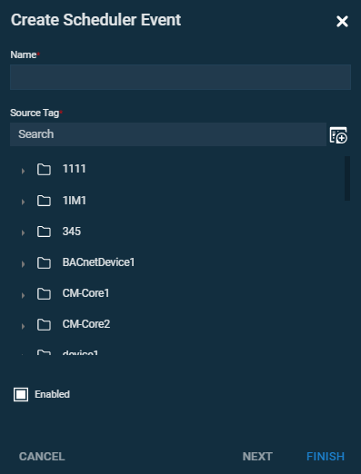
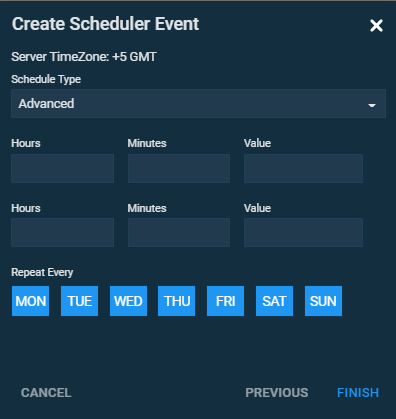
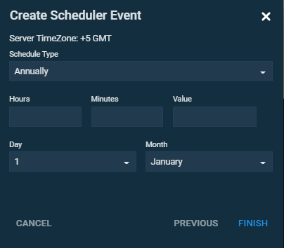

Create a Scheduler Event#
This task shows how to create a Scheduler Event.
Scheduler Events help you to plan tag values.
To create the scheduler follow these steps:
-
Click Create Scheduler Event in the Navigation pane.
-
Set the name of a scheduler and tag association in the Create Scheduler Event dialog. Click Next.
 Figure 1. Create Scheduler Event, setting name and tag Note
If you want the scheduler to be inactive, click Enabled checkbox.
-
Choose schedule type, time of execution and value to be taken.
There are two types of schedules:
-
The Advanced schedule type allows planning events that can happen:
- every day
- certain days weekly Create Scheduler Event, setting an advanced event
 Figure 2. Create Scheduler Event, setting an advanced scheduler Note
The event is going to happen every day by default. If you want to set particular days, click on the weekdays bar those that you want to exclude.
-
The Annually schedule type sets an event that happens at a certain time and date every year.
 Figure 3. Create Scheduler Event, setting an annual event
-
Related article:
- Events
This section of HMI View allows creating and editing of Scheduler Events.